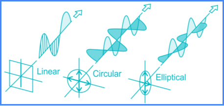

1. Speed
Electromagnetic waves travel at the speed of light in a vacuum, approximately 299,792 kilometers per second (km/s). In different media, their speed can vary based on the medium's properties.
2. Wavelength
The wavelength is the distance between consecutive peaks (or troughs) of a wave. It is inversely related to frequency:
- Formula: \( \lambda = \frac{c}{f} \)
- Where \( \lambda \) is the wavelength, \( c \) is the speed of light, and \( f \) is the frequency.
3. Frequency
Frequency is the number of wave cycles that pass a point in one second, measured in Hertz (Hz). Higher frequencies correspond to shorter wavelengths and higher energy:
- Radio waves: Low frequency
- Gamma rays: High frequency
4. Energy
The energy of electromagnetic waves is directly proportional to their frequency:
- Formula: \( E = hf \)
- Where \( E \) is energy, \( h \) is Planck's constant, and \( f \) is frequency.
5. Polarization
Polarization refers to the orientation of the electric field of the wave. Electromagnetic waves can be:
- Linearly polarized
- Circularly polarized
- Elliptically polarized
Polarization affects how waves interact with materials, such as sunglasses that block certain polarized light.
6. Reflection and Refraction
Electromagnetic waves can reflect off surfaces and refract when passing through different media. Key principles include:
- Law of Reflection: Angle of incidence equals angle of reflection.
- Snell's Law: Describes how light bends when entering a different medium.